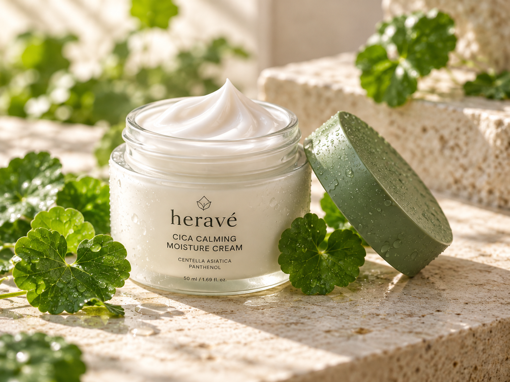
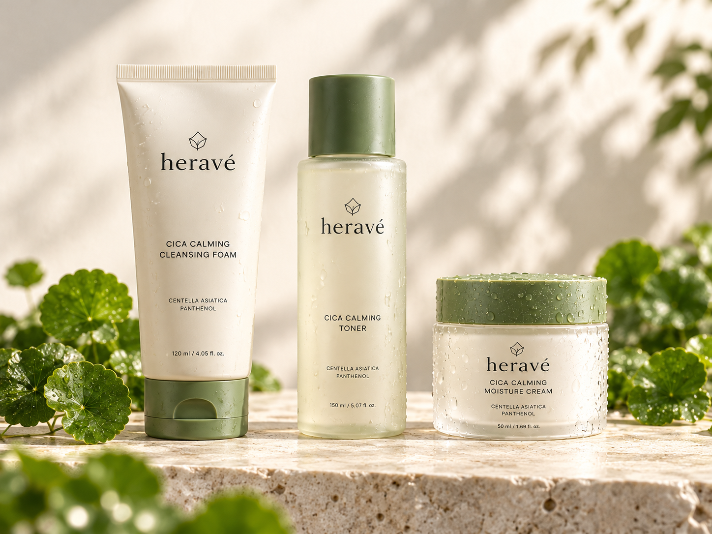
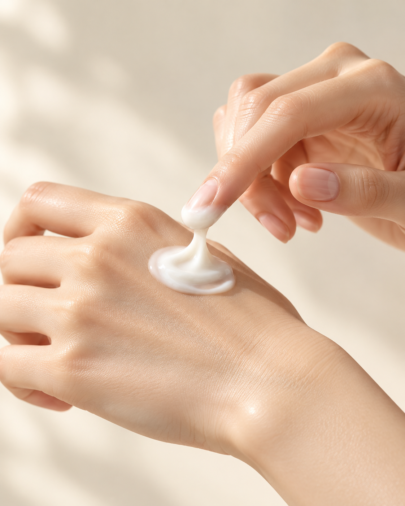
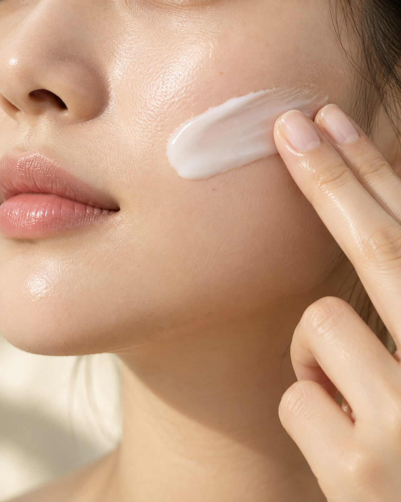
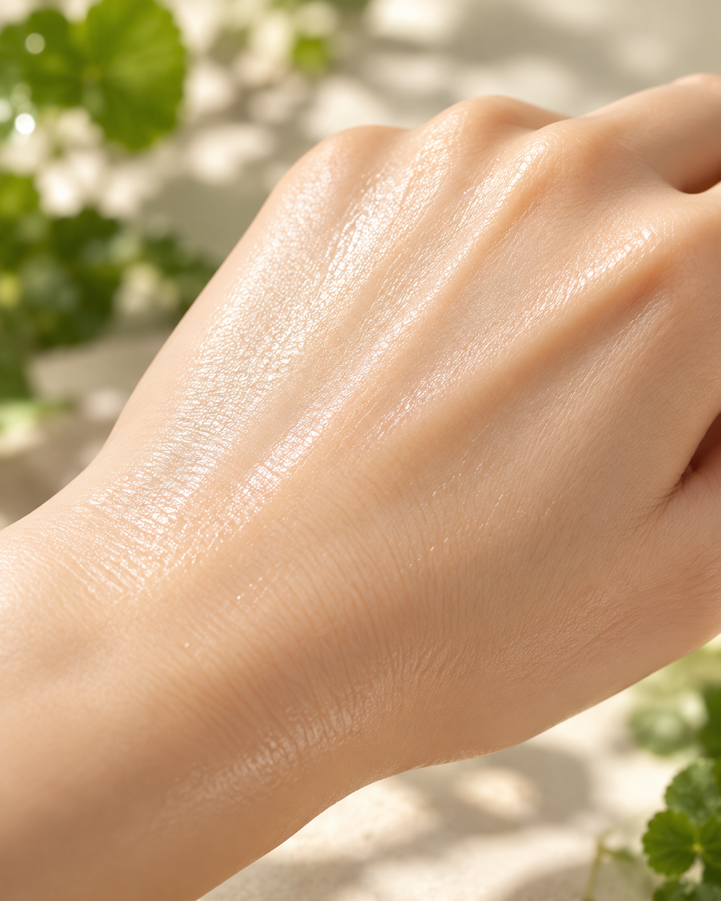
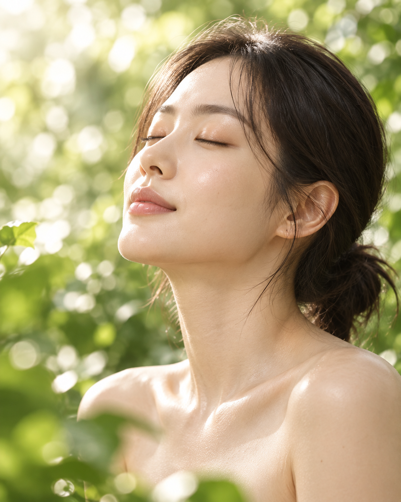

병풀 추출물
CENTELLA ASIATICA
자연에서 찾은 그린 케어
heravé
NATURAL SKINCARE
민감한 하루를
편안하게 감싸는
나를 돌보는 시간에 더하는
싱그러운 자연의 감각과 부드러운 보습.

깨끗한 숲의 공기와 잎 끝의 이슬,
부드럽게 스며드는 아침 햇살.
허라베는 자연에서 발견한 편안함을
매일의 스킨케어에 담고자 합니다.
피부에 필요한 것에 집중하는 마음.
허라베가 그리는 보습 케어의 중심에는
세 가지 성분 콘셉트가 있습니다.
CENTELLA ASIATICA
자연에서 찾은 그린 케어

PANTHENOL
편안함을 더하는 보습 케어
HYALURONIC ACID
촉촉함을 떠올리는 수분 케어
성분은 포트폴리오의 기획 콘셉트입니다. 실제 배합·함량·효능을 입증하는 제품 정보가 아닙니다.
자연의 싱그러움을 닮은 병풀 콘셉트.
바쁜 하루를 보낸 피부를 생각하며
차분하게 나를 돌보는 시간을 제안합니다.
고운 결을 따라 매끄럽게 이어지는 크림.
건조하게 느껴지는 순간에도
손이 가는 보습 루틴을 그렸습니다.
덜어내고, 필요한 것에 집중하는 스킨케어.
처음부터 마지막까지 편안한 사용감을
생각하는 허라베의 방향입니다.
저자극·피부 적합성 시험을 완료한 실제 상품이 아닙니다.
실제 제품 선택 시 전성분과 주의사항을 확인해주세요.
피부를 돌보는 순간마다,
하나의 무드로 이어지는 스킨케어.

하루의 시작과 끝,
산뜻한 클렌징 루틴
세안 후 피부를 위한
첫 번째 보습 단계
부드러운 크림으로
편안하게 마무리
라인업과 패키지는 자체 포트폴리오를 위한 제품 콘셉트입니다.
매일 쓰는 스킨케어이기에,
작은 순간까지 세심하게 생각합니다.
병풀에서 영감받은
싱그러운 그린 콘셉트
고운 크림의 결로 표현한
부드러운 보습감
필요한 것에 집중하는
세심한 케어 방향
아침에도 저녁에도
나를 위한 작은 시간
천천히, 부드럽게.
나를 돌보는 간단한 세 단계.

깨끗한 손이나 스패출러로
필요한 만큼 준비합니다.

얼굴 안쪽에서 바깥쪽으로
피부 결을 따라 펴 바릅니다.

손바닥으로 가볍게 눌러
루틴을 마무리합니다.
사용 장면은 연출 예시입니다. 실제 사용 시에는 구입한 제품에 표시된 사용법과 주의사항을 따라주세요.
자연에서 찾은 싱그러운 감각으로
일상 속 피부 고민을 바라봅니다.
복잡함은 덜고 편안함을 더하는
매일의 스킨케어를 만나보세요.
자연에서 온 영감
편안한 케어
촉촉한 보습 콘셉트
매일의 스킨케어
브랜드 기획상 추천 대상이며,
실제 피부 적합성을 보장하는 안내가 아닙니다.

아래 문구는 디자인을 위한 예시이며,
실제 사용자의 후기나 제품 평가가 아닙니다.
“하루를 마무리할 때,
나를 돌보는 시간이 더 편안해졌어요.”
“매일의 스킨케어 루틴에
자연스럽게 함께하고 싶은 무드예요.”
“차분한 색감과 크림의 질감이
눈길을 끄는 스킨케어 콘셉트예요.”
이 페이지는 포트폴리오 샘플로, 실제 제품의 피부 적합성이나 저자극 시험 결과를 보증하지 않습니다. 실제 구매 시 전성분과 주의사항을 확인해주세요.
편안한 데일리 보습 루틴을 원하는 분을 떠올리며 구성한 스킨케어 콘셉트입니다. 개인별 피부 상태에 따른 사용 적합성을 판단하는 자료는 아닙니다.
실물 상품의 향을 평가한 페이지가 아니므로 향의 유무나 강도를 안내하지 않습니다. 실제 제품의 향료 정보와 상품 설명을 확인해주세요.
임신 중 사용 가능 여부는 이 샘플로 판단할 수 없습니다. 실제 제품의 전성분과 사용 주의사항을 확인하고 필요한 경우 담당 의료진에게 문의해주세요.
실제 판매 상품이나 고객 납품 사례가 아닙니다. 성분·패키지·사진·문구와 리뷰는 기획 및 디자인 예시이며, 실제 성분·함량·효능·안전성·시험 결과 또는 구매 후기를 의미하지 않습니다. 실제 구매 기능은 제공하지 않습니다.